" The Grocery Guard is a device that helps minimize food waste, saves money spent on food, and keeps meals interesting! The Grocery Guard can be attached to a refrigerator and keeps track of the items inside, along with their expiration dates, with the use of a barcode scanner and suggest recipes."
With rising environmental awareness, food waste has become a more prominent issue in society, as reflected by the increasing number of platforms dedicated to cutting down waste. While there are already products such as LeanPath that track food waste commercially, there has yet to be any comparable product for households. There is a wide variety of applications, including WasteNoFood, PareUp, Feedie, 11th Hour, NoFoodWasted, FoodCloud, TooGoodToGo, and WiseUpWaste, that work to reduce waste through various sharing and donation services. There are also applications, such as FoodKeeper, that help individuals track their groceries. All of these platforms assume that waste is inevitable. We have created a system which will work to minimize household waste altogether. The system is controlled by a Raspberry Pi unit that scans barcodes by taking pictures from the USB Webcam and displays all the information related to User Interface on the PiTFT. It keeps track of items inside the fridge and their expiration dates, notifies the user when food is low on quantity or about to expire, and suggests recipes based on the ingredients present inside the fridge.
Design
Main Goals Of the Project:
- Scan barcodes using a webcam
- Produce notifications when ingredients are running low, about to expire, or expired
- Display items currently inside the Fridge
- Suggest recipes
Features and Usage
The Grocery Guard was designed with many features to increase functionality and allow for easy scaling. The four core functions of the Grocery Guard are:
1. Scan a barcode!
Simply place a barcode within the viewing window of the camera-based barcode reader and confirm that the correct item was scanned.
2. Display the contents of the “Fridge”
List the amount of each ingredient that has been scanned via the barcode reader.
3. Suggest recipes to cook
The Grocery Guard can act as a kitchen assistant, suggesting ,displaying, and reading recipes for the user to cook.
When the recipe is cooked, the amount of each ingredient used is deducted from the Fridge.
4. Notify when ingredients are low or about to expire
Remove any expired items from the Fridge
Hardware
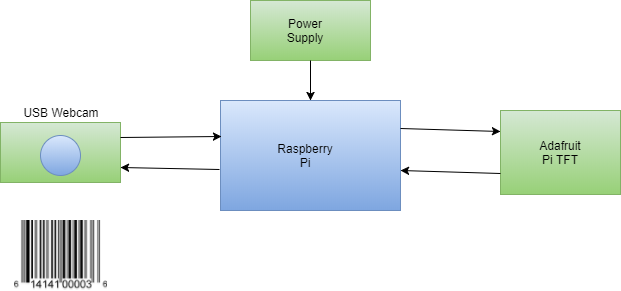 Figure 1: Hardware Block Diagram
The hardware used to implement the Grocery Guard consists of the Raspberry Pi, the Adafruit PiTFT touchscreen, and a simple USB webcam. By using the open source barcode scanning library ZBar (cite), we were able to implement the device using a $5 webcam. Not including the Raspberry Pi and PiTFT screen, this comprised the entirety of our budget!
We experimented with using a PiCamera as well, but were not able to achieve results as reliable as those with the simple webcam. In the end, the decision between using the webcam versus the PiCamera was an easy one to make.
Input with the device comes from the webcam, the PiTFT touchscreen, and the PiTFT GPIO buttons. The webcam is used to scan in barcodes, and requires the user to place a barcode within the camera’s field of view. The PiTFT touchscreen is used to navigate the menus, which comprises the majority of the device’s operation. GPIO pin 27 is configured as a bailout mechanism that places the device in “developer mode” by calling the startx command and opening the Raspberry Pi desktop.
Software
The Grocery Guard is largely software-driven, combining an intuitive user interface with a scalable PostgreSQL back end.
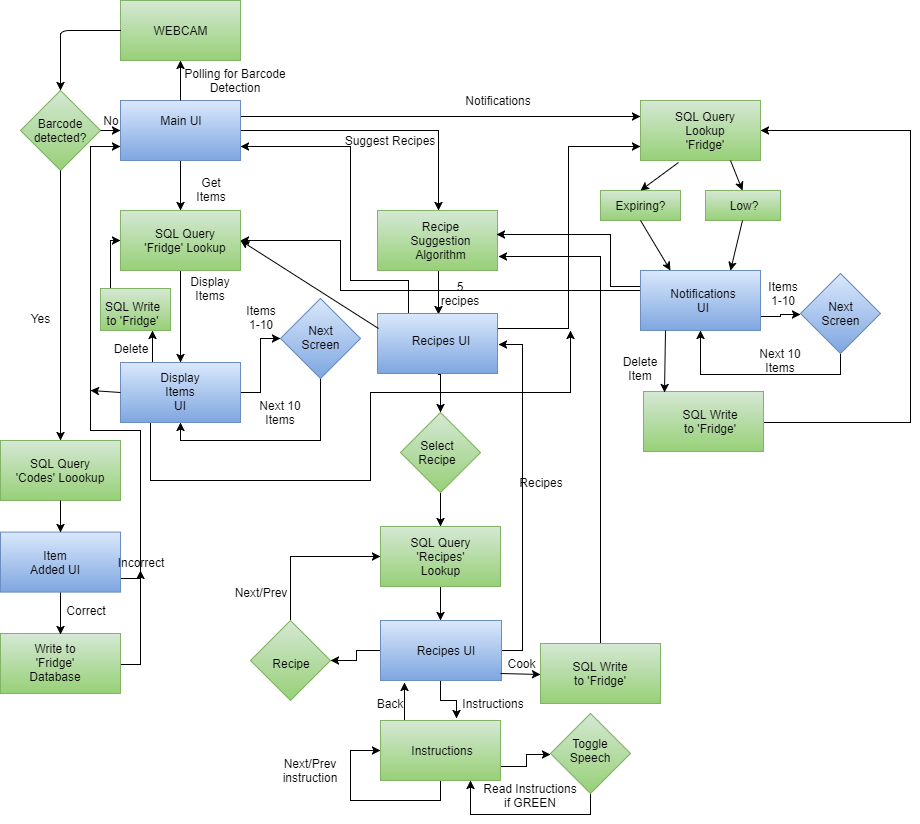
Figure 2: Software Flowchart
Front end
The front end consists of user interface screens and back end querying functions to select and format the correct data to display. We decided to implement the UI screens using Pygame, as we had gained significant experience with this library over the course of the semester.
The UI screens are:
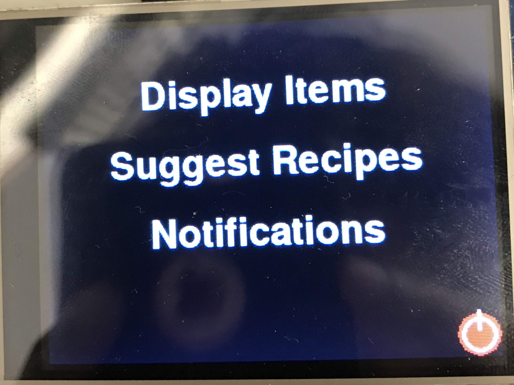Figure 3: Home Screen
Main Menu
This is the screen that is displayed when the device is first powered on. From here, the user can scan in a barcode, display the items currently in the Fridge, have recipes suggested to them, access notifications about important ingredient information, and power the device down. From this screen, the Barcode Scanning function is continuously polled to check if the user is attempting to add an ingredient to the Fridge.
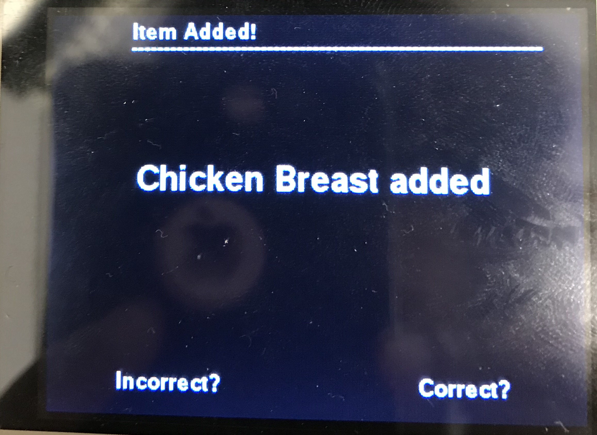Figure 4:Item Scanned Screen
Item Scanned
When an item is scanned from the main menu, the barcode is interpreted using ZBar and the result cross-referenced with the database. The result is displayed on the screen for the user to confirm. If the result matches the item scanned, the quantity is added to the fridge. If not, the result is discarded. Either way, the user is then returned to the main menu.
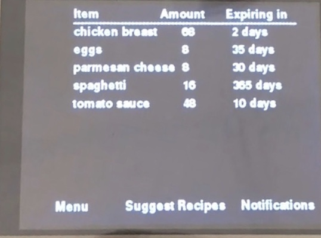Figure 5: Display Fridge Screen
Display Fridge
This screen displays the amounts of each ingredient currently contained in the Fridge. If an ingredient is expired, a button will appear next to its name that when pressed, removes it from the Fridge.
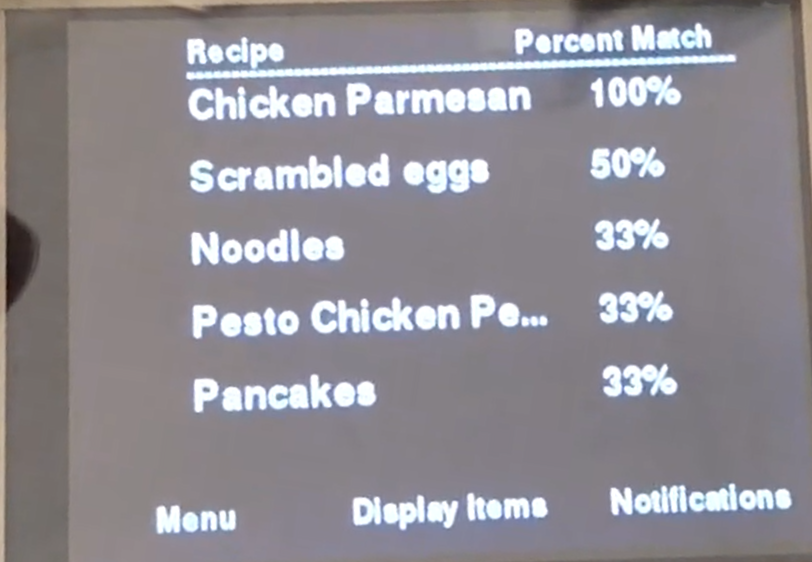Figure 6: Recipes Suggestion screen
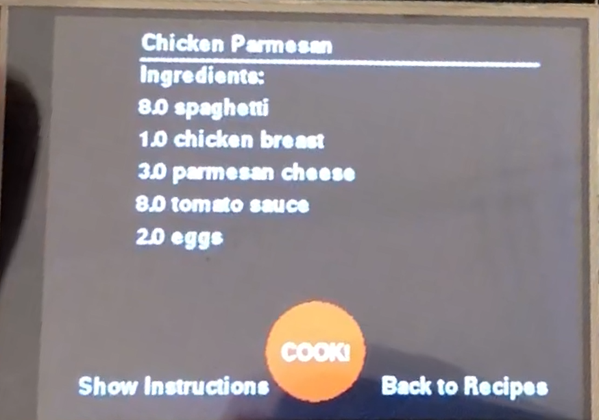Figure 7: Recipe Selected screen
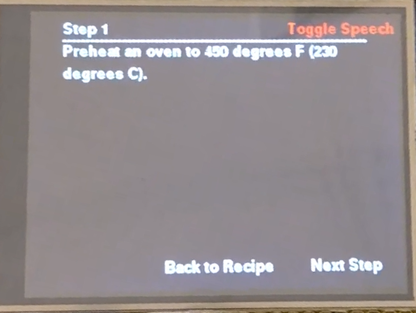Figure 8: Instructions screen
Suggested Recipes
The list of suggested recipes is displayed here, along with the percentage of the ingredients and amounts required by the recipe that are currently stored in the Fridge. When a recipe is selected, the ingredient amounts are displayed in full. The user can then scroll through the recipe instructions step-by-step. The instructions can even be read out loud to the user using the text-to-speech function 'Espeak'.
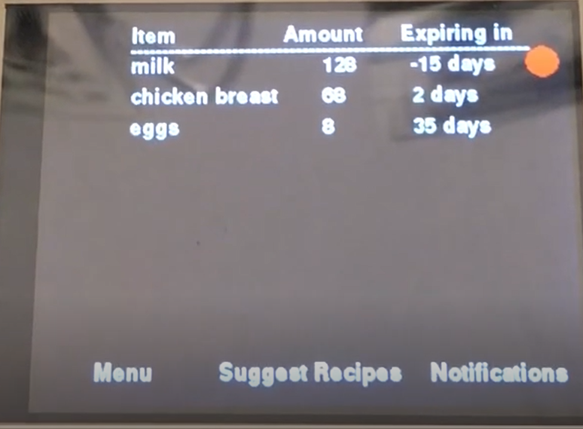Figure 9: Notifications screen
Notifications
This screen displays notifications for each of the ingredients contained in the fridge. For each ingredient, a notification is triggered if the amount is low, if it is about to expire, and if it has already expired. For the item expired case, a button is displayed alongside the notification that when pressed, removes the expired ingredient from the Fridge.
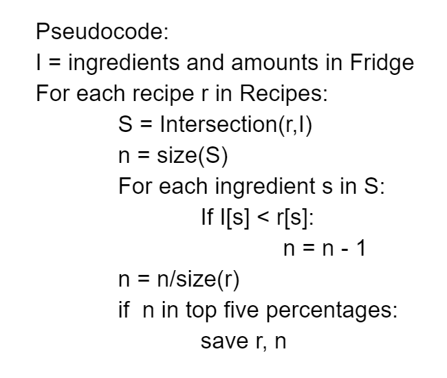Figure 10: Pseudo code for Recipe Suggestion
Suggest Recipes
This function suggests a list of five recipes to cook based on the percentage overlap between the recipe and the ingredients and amounts currently in the Fridge. For each of the recipes in the back end database, the ingredients it requires is compared to the ingredients in the Fridge. Then, for each of these ingredients, if the amount in the Fridge is less than the amount required by the recipe, the number of overlapping ingredients is decremented. The percentage of overlap is given by the number of ingredients used in the recipe and contained in the Fridge divided by the number of ingredients required by the recipe. The five highest percentage match recipes are returned.
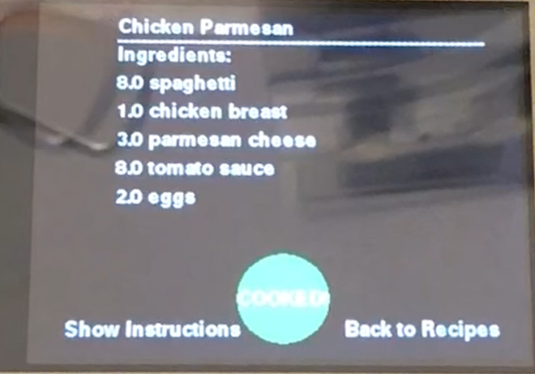Figure 11: Cooked recipe screen
Cook Recipe
From the Suggest Recipes screen, the user has the option to “cook” any of the suggested recipes. When the user presses the button labelled “COOK!”, the button changes to “COOKED!” and the ingredient amounts consumed by the recipe are subtracted from the Fridge.
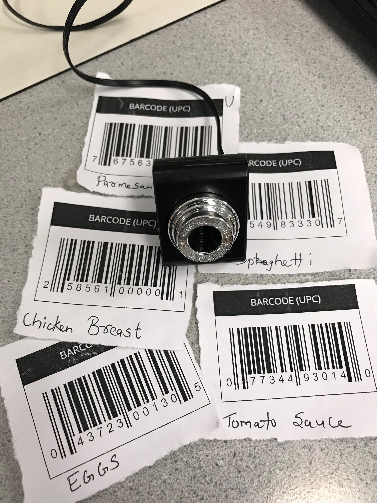Figure 12: Barcodes
Scan Barcode
From the Main Menu screen, the user can scan in barcodes to be added to the Fridge. The user simply has to place a barcode within the field of view of the camera, and the device will automatically detect it. An image is first grabbed from the webcam using the Pygame.Camera class and stored as a Numpy array. This array is then interpreted by ZBar, which produces a result in the form of a UPC barcode ID. If the barcode is accepted by the user, the ingredient is added to the ‘Fridge’ table in the database.
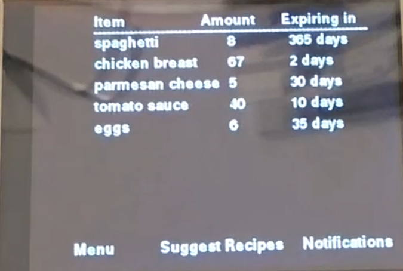Figure 13: Ingredients screen
Get Ingredients
This function polls the ‘Fridge’ table, returning the full list of ingredient names, amounts, how long it typically lasts, and the date it was added. This list is then passed to the Display Ingredients UI, which parses and displays it.
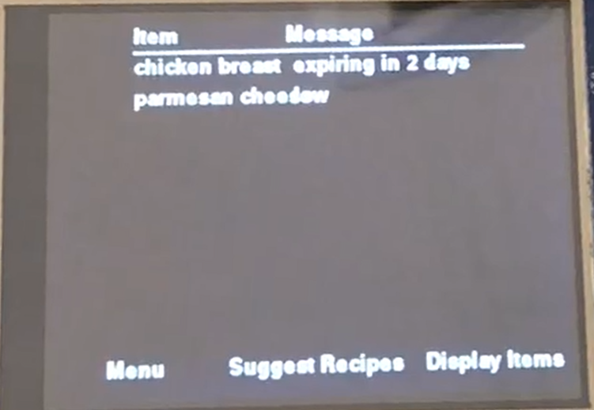Figure 14: Notifications screen
Get Notifications
This function also polls the ‘Fridge’ table and generates notifications for each. The amount field is checked and a notification triggered if it is low. The days to expiration is computed by subtracting the current date from the date the ingredient was added to the Fridge and comparing that to the number of days the ingredient typically takes to expire. If the days until expiration is low or is negative, a notification is generated.
Back end
The back end consists of a PostgreSQL database with three tables ‘Codes’, ‘Fridge’ and ‘Recipes’. Postgres is a powerful, open source object-relational database with an emphasis on extensibility and standards compliance. As a database server, its primary functions are to store data securely and return that data in response to requests from other software applications (Python via Psycopg2 in our case).
We decided to use PostgreSQL because of its extensive database size availability and wide support in the Python development community.
1. Maximum Database Size: Unlimited
2. Maximum Table Size: 32 TB
3. Maximum Row Size: 1.6 TB
4. Maximum Field Size: 1 GB
5. Maximum Rows per Table: Unlimited
6. Maximum Columns per Table: 250 - 1600 depending on column types
7. Maximum Indexes per Table: Unlimited
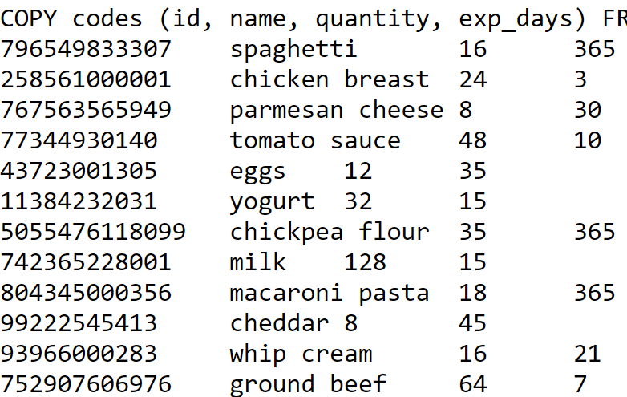Figure 15: Snippet Table Codes
Codes Table
Table ‘Codes’ is the lookup table for the ingredients match. It comprises all the ingredients and their corresponding UPC barcode number (ID), quantity and number of days the item keeps. As a test database, we had 28 items inside the ‘Codes’ table. When a Barcode is scanned by the webcam, the front end looks up the UPC barcode number of that item in the ‘Codes’ table from the database. On finding the match, it returns the name of the item that corresponds to that particular barcode and the Pi displays the name on the TFT screen as ‘name’ + added.
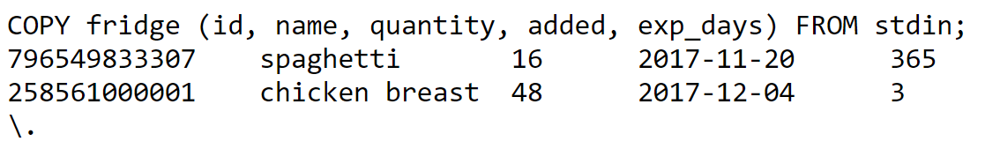Figure 16: Snippet Table Fridge
Fridge Table
The ‘Fridge’ table keeps track of the updated list of ingredients inside the refrigerator. It comprises of UPC Barcode number (ID), name of the ingredient, amounts to keep track of the quantity of each item, date added and the expiration date for the items. If a barcode is scanned of the correct item, the front end adds that item to ‘Fridge.’ When an item’s quantity is non-positive or is expired and the user wants to remove it from the fridge, the front end removes that item from the ‘Fridge’ table.
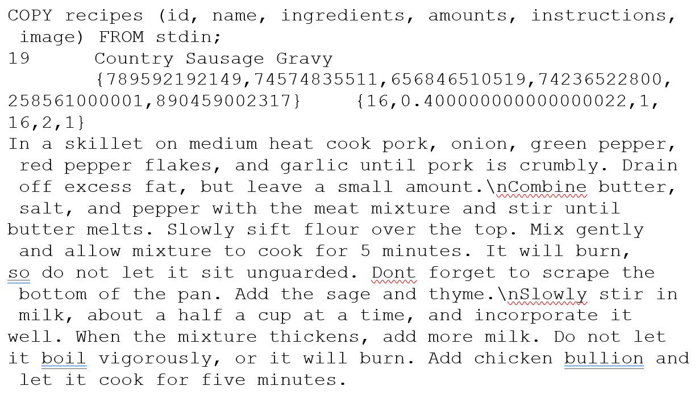Figure 17: Snippet of Table Recipe
Recipe Table
The ‘Recipes’ table is the look up table for the recipe suggestions. The test database contains 20 recipes, each comprised of an ID (1-20) to distinguish it from other recipes, name of the recipe, ingredients needed to make that recipe, amount of the required ingredients, stepwise instructions of how to make that recipe, and an image in the bytea format displaying the recipe. We had 20 recipes inside the ‘Recipes’ table to design a testing database. The front end selects 5 recipes with most overlap percentage depending on the ingredients and their amounts present inside the Fridge from these recipes, sorts them and displays them on the PiTFT.
Future Work
Given more time, the Grocery Guard could be dramatically improved. One design choice that we would reevaluate would be the handling of units in the back end. The implementation presented here implicitly assigns units of measure to ingredients based on their most common usage. Each volume and mass is given in standard units of tablespoons or ounces, respectively. For example, milk is always stored as a volume and cheese as a mass. While this design choice simplifies the database implementation, it also introduces confusion and database maintenance complexities. If the user is not familiar with the units used, or an ingredient is ambiguous in its standard unit (yogurt is a great example: is it measured as a volume or a mass?), then the amounts displayed on the device can be difficult to interpret. In addition, recipe and ingredient units must be converted to the standard units whenever data is added to the database.
We would also explore the option of hosting the back end remotely so that the required device stored could be reduced. With remote hosting and a simpler device such as the Raspberry Pi Zero, we expect that we could implement the device for under $10.
The future extensions are virtually limitless. The barcode scanning implementation worked well as a proof of concept, but many food items such as produce do not have barcodes at all. A cell phone app in which users can add or delete items to their Fridge manually would cover more ingredients at the cost of incurring more work for the user. If the app also functioned as a grocery list, the user would only have to enter in ingredients a single time, while also extending the system’s usefulness. Another extension would be to partner with grocery stores to incorporate their product databases into our device. This would encourage shoppers to purchase from partner stores, while also increasing the number of products that the Grocery Guard could cover.
Results & Conclusion
Our implementation met our initial expectations for the project and even exceeded them in some ways. We envisioned a device that would be both useful and easy to use, and we believe that our prototype checks both of those boxes. At the outset of the project, our goals were to create an embedded device that could scan barcodes to the Fridge, track the ingredients in the Fridge, and suggest recipes based on that list. The Grocery Guard incorporates all of those features and a few additional extensions. In addition to simply displaying the ingredients in the Fridge, the device generates notifications and allows the user to easily remove expired items. The recipe suggestion feature was extended to create the “chef’s assistant” feature, displaying a recipe and reading the instructions out loud. The barcode reading was implemented exactly as intended.
Figure 18: Home Screen UI
Figure 19: Display Fridge UI
Figure 20: Notifications UI
Figure 21: Recipes UI
Overall, we believe the Grocery Guard could be an incredibly useful tool for streamlining a kitchen and reducing food waste. With such a device, no ingredient would ever be forgotten in the back of the refrigerator, and no recipe would ever be started only to realize partway through that an ingredient is missing. Further, the overwhelming anxiety induced by the question “What should I cook” would be greatly lowered, bringing any recipe and the decision to cook it to the level of ease of a bowl of instant ramen.
Acknowledgements
We would like to give a special thanks to our professor Joe Skovira for all the recommendations, support and guidance that he provided to us throughout our work on this project. Prof. Skovira was of immense help in getting this project completed. We would also like to thank him for building a great course from which we have gained enourmous amount of knowledge and hands on experience. Also, we would like to thank the TA’s Steven Yue, Brendon Jackson, Mei Yang and Arvind Kannan for the continuous support and guidance throughout the semester.
Parts List
| Name |
Price |
| Raspberry Pi |
$35.00 |
| Webcam |
$5.99 |
| Total |
$40.99 |
References
Work Distribution
- Cameron: Implemented the user interface, front end-back end communication functions, and recipe suggestion and notification generation algorithms. Contributed to the Website Submission.
- Dev: Implemented the zBar library functions for barcode scanning, the user interface, back end databases, display fridge algorithm and Espeak functions. Contributed to the website submission.